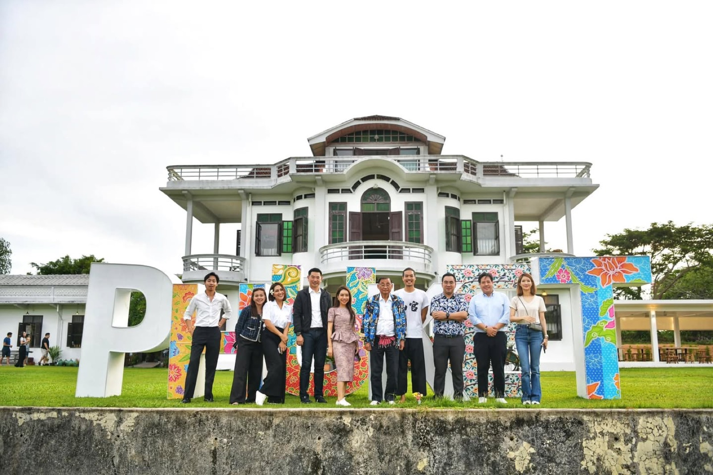

2024 · role · event
TAT picks Toh Daeng to host the Minister of Tourism and Sports

Original text in Thai
ขอบคุณ ททท ที่เลือก โต๊ะแดงบ้านอาจ้อ เป็นสถานที่เลี้ยงรับรอง รมว กระทรวงท่องเที่ยวและกีฬา พร้อมคณะ นะครับ ❤️
เล่าย้อนหลัง 18 มีค 24 วันเกิดที่ผ่านมา โชคดีหลายต่อ ที่มีโอกาสได้เข้าร่วมสักการะพระบรมสารีริกธาตุ วัดบางโทง จ.กระบี่ 😇
หนึ่งในความโชคดีนั้นคือ ได้เข้าไปนั่งในสถานที่ประกอบพิธีกรรม (ผู้เข้าร่วมสักการะต่อวันราว 100,000 คน) ยิ่งกว่านั้นคือ แทบเป็นคนสุดท้ายก่อนที่จะประตูจะปิดลง จึงได้นั่งโซนหน้าสุดของแถว ซึ่งอยู่ข้างกับที่นั่งประธานในพิธีในวันนั้นพอดิบพอดี ❤️
ประธานในวันนั้นคือ ท่าน รมว เสริมศักดิ์ ยังดำรงตำแหน่งในกระทรวงวัฒนธรรม ได้เห็นและคุ้นหน้าคุ้นตา แต่ที่คุ้นกว่าคือคุณระเบียบรัตน์ มาร่วมในงานพิธีด้วย ✨
มาวันนี้ ทาง ททท ได้เชิญท่านมาทานข้าวที่โต๊ะแดงบ้านอาจ้อ โชคดีที่ได้เจอและได้ต้อนรับท่านและคณะอีกครั้ง ขอบคุณครับ โอกาสหน้าเรียนเชิญมาทานข้าวอีกนะครับ 😇❤️
ฝากจังหวัดภูเก็ตให้ท่านและคณะ ช่วยสนับสนุน ผลักดันการท่องเที่ยวและกีฬา ให้เป็นอุตสาหกรรมที่สร้างงานสร้างอาชีพที่ยั่งยืน ให้กับคนในพื้นที่ เราโต๊ะแดงบ้านอาจ้อทีมคนภูเก็ต ร่วมเป็นหนึ่งในฟันเฟืองเล็กๆ ที่จะขับเคลื่อนและร่วมพัฒนาการสร้างงานสร้างอาชีพในพื้นที่ที่เราอยู่ให้ดีที่สุดนะครับ ❤️
ภาพนี้ถ่ายเมื่อ 5/6/24 ☀️
#ททท 🌟
#tohdaeng 🧧
#บ้านอาจ้อ ❤️